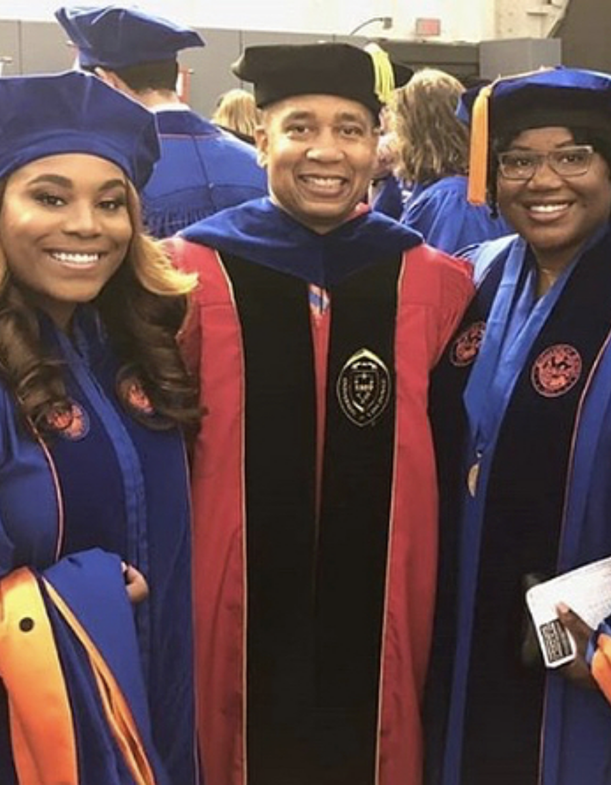

Diversity and Inclusion Initiatives

Commitment to Diversity
Diversity and inclusion have always been integral to UF CISE's mission. Under the leadership of Dr. Juan E. Gilbert, the department has significantly increased its efforts to foster an inclusive environment for students, faculty, and staff.
Diversity and Inclusion Committee
The UF CISE Diversity and Inclusion Committee, launched in 2016, works to ensure that the department is welcoming to students from all backgrounds, with an emphasis on recruiting underrepresented minorities and women into computer science.
Impact on Student Enrollment
These efforts have led to a significant increase in the number of underrepresented students entering the department, including a doubling of female students over the past decade.